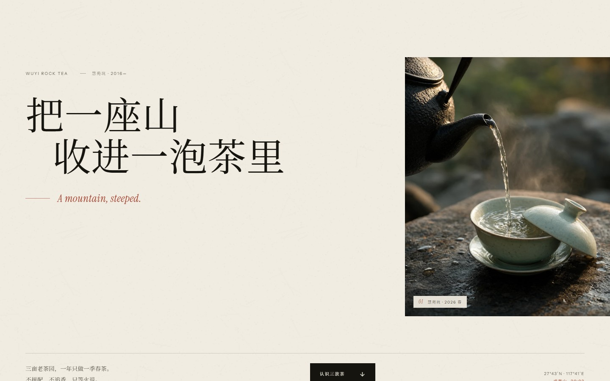
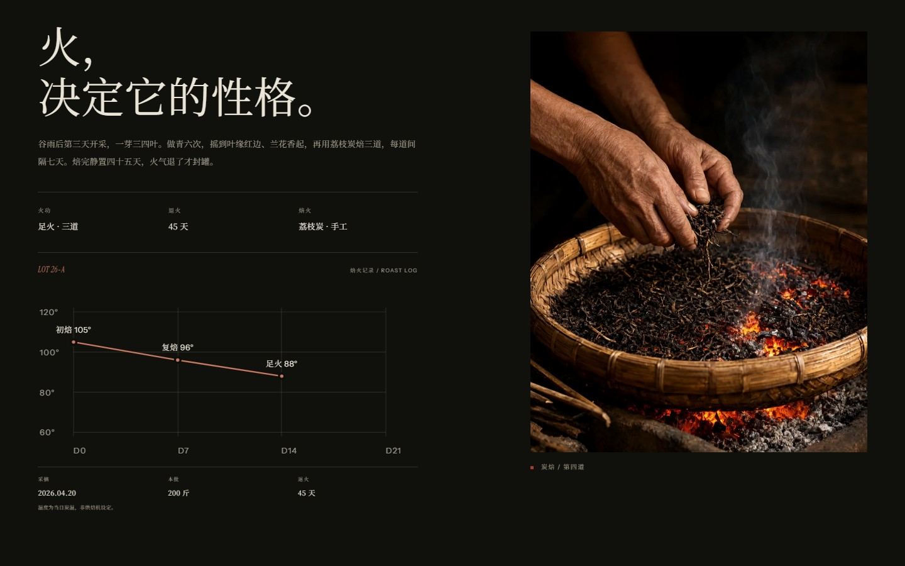
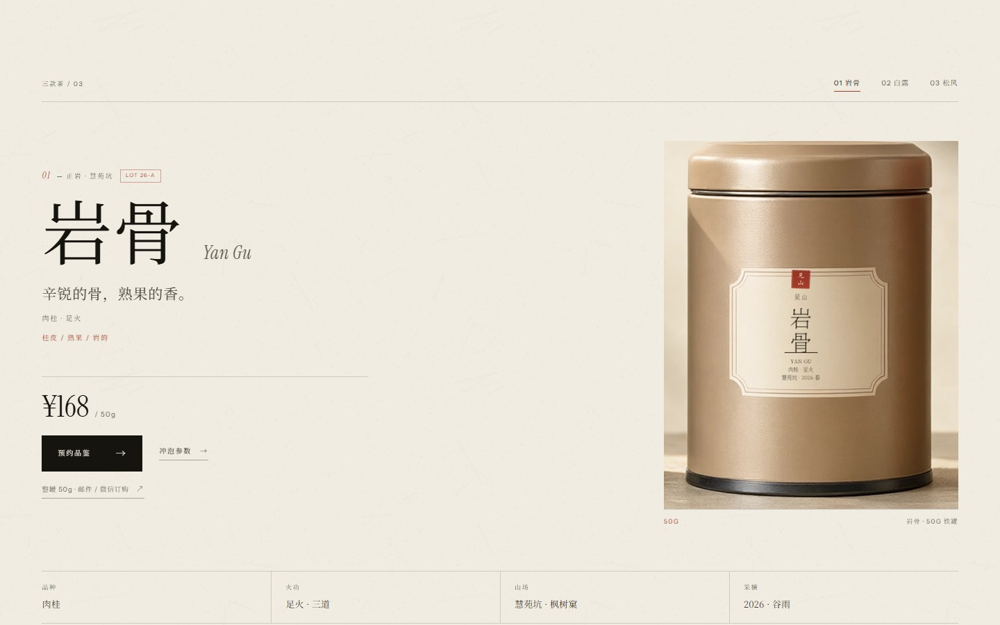
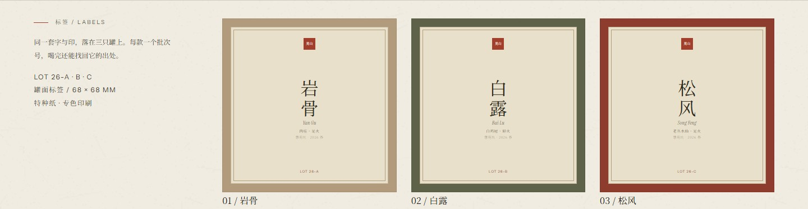
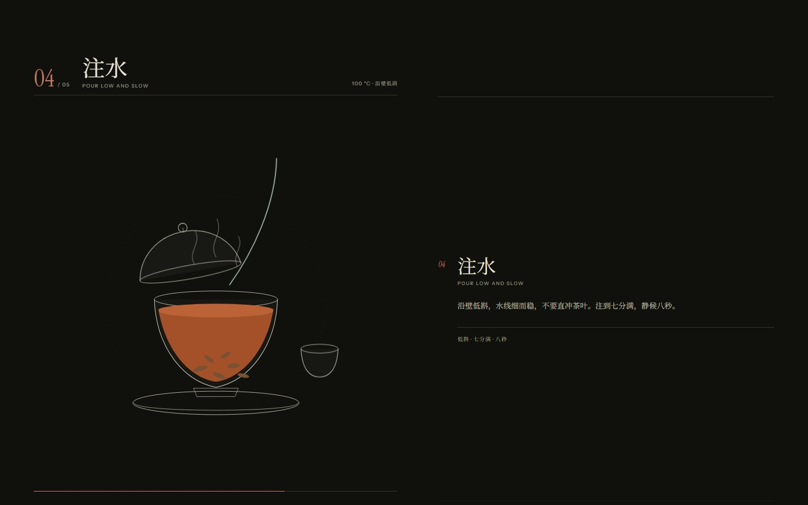
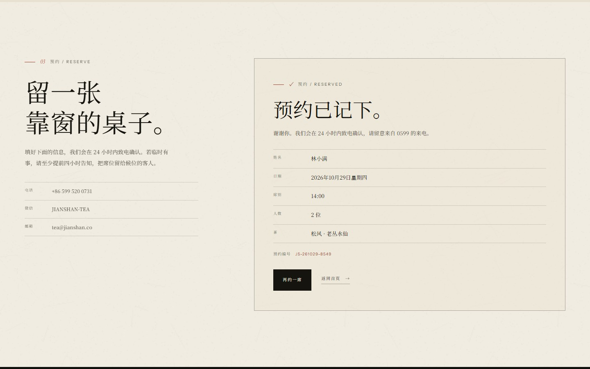

Case study 2026 · 独立项目
見山：
让一泡茶，
有据可依。
一个虚构的武夷岩茶品牌，从山场叙事、产品系统到冲泡交互与到访预约的完整构建。目标不是“看起来像茶品牌”，而是让人相信这泡茶真的存在。

00 摘要 / Summary
把“茶很美”，
换成“为什么是这一泡”。
网站要回答四个问题：这片山在哪、三款茶有什么不同、怎么泡、怎么来喝。整站的结构、视觉与动效，都围绕这条路径展开。
它不追求把页面做得更“满”，而是让每个细节都能被验证：产地、品种、火功、退火天数、克数、水温、出汤时间，以及一张真的能提交的预约表单。
01 问题 / Problem
好看的茶站很多，
可信的很少。
茶品牌官网常见两种：一种只有滤镜山水与毛笔字，一种把茶当快消品。两者都缺少可验证的细节。看起来高级，却无法回答“为什么是这一泡”。
初版也掉进了同一个坑：视觉先行，三款茶分别来自福鼎、桐木关和武夷山，和“一片山场”的主张自相矛盾。这次重做，先把事实排清楚，再谈风格。
“风格可以从任何地方借来，
细节只能自己长出来。”
02 策略 / Strategy
一片山场，三款茶，
一条完整的路径。
所有茶收回慧苑坑，用品种与火功区分：肉桂足火是岩骨，白鸡冠轻火是白露，六十年老丛水仙是松风。产地不再是一个装饰性的词，而是产品差异的来源。
页面结构也随之确定：认识、理解、实践、到达。每一步都只做一件事，并且把下一步交给用户。
-
01
认识
先看见山场与三款茶的性格，而不是先看价格。
Home -
02
理解
品种、火功、风味结构与山场，逐款拆开。
Tea detail -
03
实践
五个动作与具体参数，回家也能复现。
Brew -
04
到达
地址、路线、时席与预约表单，一条路走到底。
Visit
03 视觉 / System
纸、墨、朱砂，
和一条不对称的网格。
纸色承担留白，墨色承担正文，朱砂只给动作、印记与关键数字。绿色只出现在茶罐上，不进入界面。中文用 Noto Serif SC，拉丁用 Instrument Serif 与 Instrument Sans：标题有骨，参数清楚。
十二栏网格允许图片向右出血，正文行长控制在三十到三十四个字。节奏来自不对称的留白，而不是更多的装饰。
第二层信息不靠滤镜：标签打样、批次号与焙火曲线，让“高级感”有东西可核对。
見山 · 岩骨花香
A mountain, steeped.
WUYI ROCK TEA · HUIYUAN VALLEY · 2026

04 产品 / Product
三只罐子，
一套可以复用的产品系统。
每款茶有独立的品种、火功、退火期、风味结构与冲泡参数。页面由一份共享数据渲染，用 ?tea= 切换，而不是复制三份模板。
每款茶还带一张批次档案：LOT 编号、采摘日、本批斤数、焙火曲线与退火天数。罐面标签、茶品页和订购邮件共用同一个编号，线上线下的语气对得上。
价格与克重始终同时出现；订购走真实的邮件链接，不假装有支付。避免“看起来高级但买不到”的假电商。


05 交互 / Motion
把动效预算，
全部压进一次冲泡。
初版有自定义光标、磁吸按钮和纸幕转场。它们让页面“像作品集”，却和茶无关。重做时全部删除，只留下唯一一个复杂交互：冲泡。
温器、投茶、醒茶、注水、出汤。滚动推进，盖碗、水流、茶汤与步骤同步变化。没有劫持滚动：原生滚动、sticky 舞台、一个轻量状态机。

为什么是冲泡
这是茶与网页最自然的交集：一个需要等待的动作。它能把“山场”与“火功”落到用户的手上。
怎么实现
步骤几何位置驱动 active 状态，进度条读取整段滚动比例；SVG 的盖子、水流、液面与茶杯由状态类切换。
怎么降级
移动端与减少动态偏好下，交互变成一张静态冲泡图解与完整步骤，不隐藏任何必要信息。
“动效不是装饰，
是把‘等’这件事画出来。”
06 工程 / Build
品牌四页，零构建，
零运行时依赖。
静态 HTML、CSS 与 JavaScript；字体自托管，图片统一为 WebP；没有框架，没有打包器。原生滚动，动画只碰 transform 与 opacity，头部的滚动监听只切换一个类名，冲泡舞台的监听用 rAF 节流。
可访问性不是最后补的：跳过链接、移动菜单焦点陷阱、键盘 Tab、表单错误提示、prefers-reduced-motion 降级。字体只保留站点实际用到的字形。
- 品牌页面
- 04
- 茶品状态
- 03
- 运行时依赖
- 00
- 共享数据层
- 01

07 反思 / Reflection
还差的，
和下一步。
预约表单目前只在前端演示，真实上线需要后端、库存与通知；订购入口是真实的邮件链接，但不包含支付。产品摄影仍是 AI 生成，正式品牌需要实拍与印刷打样。
下一步会做三件事：用 CMS 让主理人自己换茶单；把冲泡参数做成可保存的卡片；补一版英文。最大的收获是：克制不是少做，而是把力气放在能建立信任的地方。
本页面中的品牌、茶品、价格、地址与预约均为虚构，仅用于作品集展示。